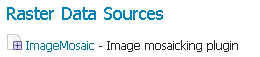
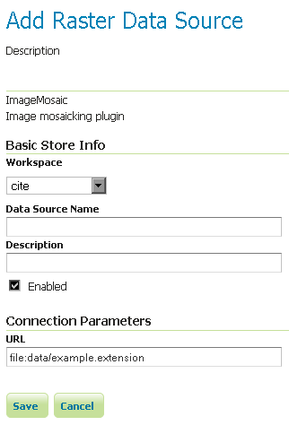

ImageMosaic¶
ImageMosaic 데이터 저장소를 통해 지리정보가 포함된 복수의 래스터에서 모자이크를 생성할 수 있습니다. 이 플러그인은 GeoTIFF는 물론 월드 파일(PNG 파일의 경우 .pgw 확장자, JPG의 경우 .jgw 확장자, 등등)과 함께 있는 래스터에도 사용할 수 있습니다.
“Mosaic” 작업으로 2개 혹은 그 이상의 소스 이미지에서 모자이크를 생성할 수 있습니다. 이 작업으로 지리공간적으로 수정된, 서로 겹치는 이미지들을 하나의 연속적인 이미지로 결합할 수 있습니다. 파노라마처럼 사진 여러 장을 사진 한 장으로 이어 붙일 수도 있습니다.
현재 ImageMosaic 설정에 대해 가장 잘 알 수 있는 방법은 다음 Using the ImageMosaic plugin Tutorial 페이지입니다.
Adding an ImageMosaic data store¶
새 데이터 저장소를 추가할 때 기본적으로 Raster Data Sources 목록에 ImageMosaic 옵션이 보일 것입니다.

래스터 데이터 저장소 목록의 ImageMosaic 옵션
Configuring an ImageMosaic data store¶

ImageMosaic 데이터 저장소 설정하기
| 옵션 | 설명 |
| Workspace | |
| Data Source Name | |
| Description | |
| Enabled | |
| URL |
이전: WorldImage
다음: ArcGrid